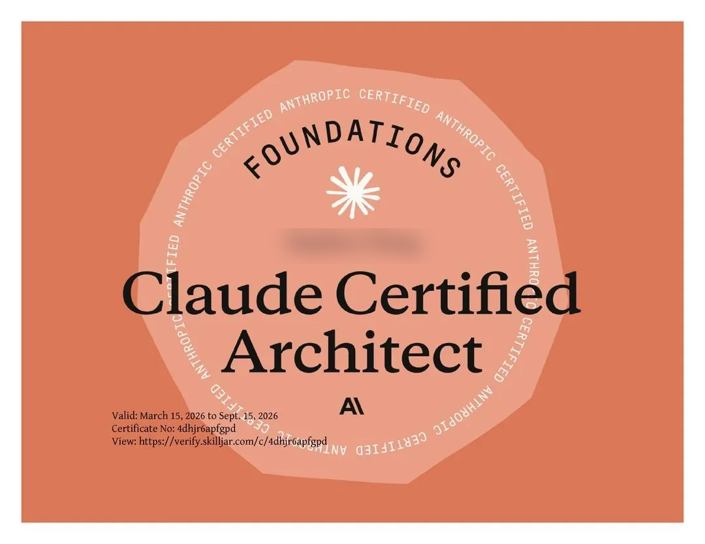

這份認證驗證「用 Claude 打造正式環境應用」時，能否對架構與取捨做出正確判斷。考試橫跨 Claude Code、Claude Agent SDK、Claude API 與 MCP 四大核心技術，題目全部取材自真實客戶情境。
適合對象：用 Claude 設計並實作正式環境應用的 solution architect，通常具備 6 個月以上、實際操作 Claude API／Agent SDK／Claude Code／MCP 的經驗，了解大型語言模型在正式環境的能力與限制。
考試是「情境包著知識點」在問。共有 6 個情境，正式考試會隨機抽出其中 4 個，每一題都掛在某個情境下（例如：「客服 agent 在 12% 情況跳過 get_customer，該如何修正？」）。先熟悉這 6 個情境，答題時的語感會更貼近真實考題。
get_customer、lookup_order、process_refund、escalate_to_human）接後端。目標 80%+ 首次解決率，並懂得何時轉真人。CLAUDE.md，並判斷何時用 plan mode、何時直接執行。百分比為「計分內容」的佔比，反映各領域題目的密度。Domain 1 最重，建議優先準備。
agentic loop 生命週期（tool_use vs end_turn）、coordinator–subagent 多代理編排、subagent 呼叫與 context 傳遞、強制執行與 handoff、Agent SDK hooks、任務拆解、session 狀態與 fork。
用清楚的描述與邊界設計工具介面、MCP 工具的結構化錯誤回應（isError、可重試與否）、工具在各 agent 間的分配與 tool_choice、把 MCP server 接進 Claude Code、善用內建工具（Read/Write/Edit/Bash/Grep/Glob）。
CLAUDE.md 階層與模組化、自訂 slash command、plan mode vs 直接執行、Agent Skills、整合外部工具與團隊工作流配置。
JSON schema 與 tool_use 強制結構化輸出、few-shot 範例降低 false positive、驗證／重試／回饋迴圈、批次處理策略（Message Batches API）、多實例與多回合審查架構。
長對話中保留關鍵資訊（避免 progressive summarization 流失、處理「lost in the middle」）、escalation 與模糊情況的處理、多代理系統的錯誤傳遞、確定性保證 vs 機率性合規。
通過考試後會核發如下的數位證書，標示認證等級、有效期間與可線上驗證的證書編號（持證人姓名已模糊處理）。

※ 持證人姓名已模糊處理。